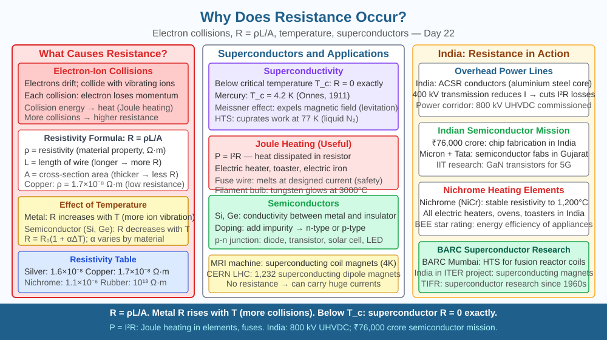

By the end of this lesson, you should be able to explain why metals resist the flow of electric current at the atomic level, state how length, cross-sectional area, and temperature each affect resistance, and predict what happens to resistance when a wire is heated significantly.
Two wires connect the same battery to identical bulbs. One wire is thin and one is thick; one is short and one is long. The bulbs glow at different brightnesses. Ohm's Law tells you V = IR, but that formula just describes the relationship — it does not tell you why resistance exists in the first place. Why does a wire resist current at all? Why does a longer, thinner, or hotter wire resist more?
Electrical resistance is fundamentally caused by collisions between drifting electrons and the vibrating ions of the metal lattice.
The atomic picture. A metal consists of a regular crystal lattice of positively charged ions (for example, copper ions Cu²⁺) surrounded by a sea of free electrons. When a voltage is applied, electrons drift toward the positive terminal. They do not travel in a straight line — they repeatedly collide with the lattice ions. Each collision transfers kinetic energy from the electron to the ion, which is why a resistor gets warm (or a filament gets hot enough to glow). After each collision, the electron is deflected and must be re-accelerated by the electric field before it collides again. Resistance is the macroscopic result of all these microscopic collisions.
Why length increases resistance. A longer wire means electrons must travel further and therefore undergo more collisions before reaching the positive terminal. Doubling the length doubles the number of collisions and doubles the resistance. Mathematically, R ∝ l (resistance is directly proportional to length).
Why narrower cross-section increases resistance. A thinner wire has fewer free electrons available in any cross-section for current to flow through. It is like narrowing a corridor — the same crowd (electron density) is squeezed through a smaller space, colliding more frequently with the walls (lattice). Resistance is inversely proportional to the cross-sectional area A: R ∝ 1/A.
Combining both: The resistance of a uniform wire is given by:
R = ρl / A
where ρ (rho) is the resistivity of the material — a constant that depends on the material's nature and temperature. Copper has ρ ≈ 1.7 × 10⁻⁸ Ω·m; nichrome (used in heating elements) has ρ ≈ 1.1 × 10⁻⁶ Ω·m, about 60 times higher.
Why temperature increases resistance in metals. At higher temperatures, the lattice ions vibrate with greater amplitude. This means electrons encounter a larger effective "target" at each ion site and collide more frequently. More collisions per unit length → more energy lost per unit distance → higher resistance. For most metals, resistance increases roughly linearly with temperature. This is described by:
R_T = R₀ (1 + αΔT)
where α is the temperature coefficient of resistance (positive for metals), R₀ is the resistance at a reference temperature, and ΔT is the temperature rise.
Ohm's Law in context. V = IR holds for conductors called ohmic conductors — those whose resistance stays constant as current and voltage change (at constant temperature). When we say "the resistance of a wire is 5 Ω," we mean the ratio V/I stays at 5 Ω across a range of voltages — which is only true if temperature is controlled. A filament bulb is not ohmic because as it heats up, its tungsten resistance climbs steeply, making the V–I graph a curve rather than a straight line.
Picture electrons as commuters in a crowded railway station (the metal lattice):
The unit of resistance is the ohm (Ω): one ohm means one volt drives one ampere. The unit of resistivity is Ω·m.
The included SVG shows a rectangular wire cross-section with:

Q3 established that increasing temperature increases resistance in a metal wire because ions vibrate more and obstruct electron drift more. Now extend this further: carbon (graphite) and semiconductors such as silicon behave oppositely — their resistance decreases when temperature rises. Given the collision model of resistance, propose two possible mechanisms that could explain why these materials behave differently from metals when heated. (Hint: think about what determines the number of free charge carriers available, not just the collision frequency.)
What causes electrical resistance in a conductor?
Correct answer: c
Why is understanding resistance mechanism more useful than just applying Ohm's Law?
Correct answer: c
What would happen to a wire's resistance if its temperature increased significantly?
Correct answer: c
Without using any formula, explain to a Class 7 student in 60 seconds why a longer, thinner wire gives more resistance than a short, thick one. Use a physical analogy (not the formula). Then explain the same idea using R = ρl / A and calculate: if a 2 m copper wire has resistance 0.034 Ω, what would be the resistance of a 6 m wire of the same material and cross-section?
Superconductors are materials that, below a critical temperature (often close to absolute zero, −273 °C), lose all electrical resistance completely. Resistance drops to exactly zero — not just very small. A current started in a superconducting loop continues flowing indefinitely without any battery. This happens because below the critical temperature, electrons pair up into quantum mechanical entities called Cooper pairs that move through the lattice without any collisions. The MRI machine in most major Indian hospitals uses superconducting coils cooled with liquid helium to generate the enormous magnetic fields needed for imaging.
Electrical resistance arises because drifting electrons repeatedly collide with vibrating lattice ions, transferring energy as heat; resistance increases with wire length and temperature, decreases with cross-sectional area, and depends on the material's inherent resistivity ρ.